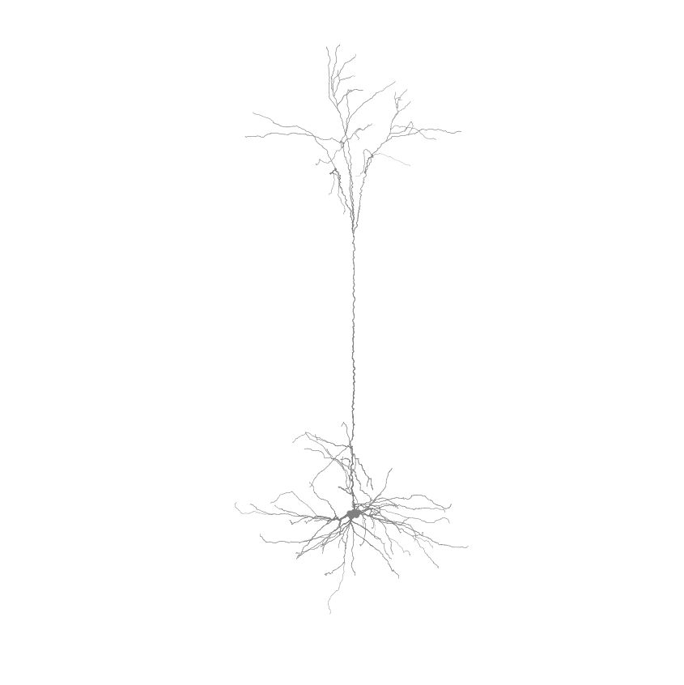
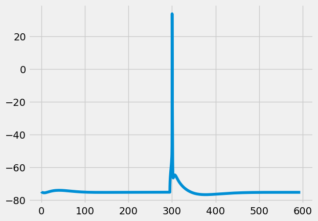
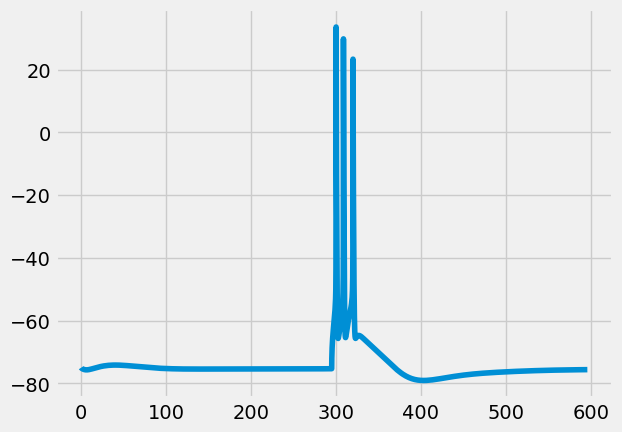
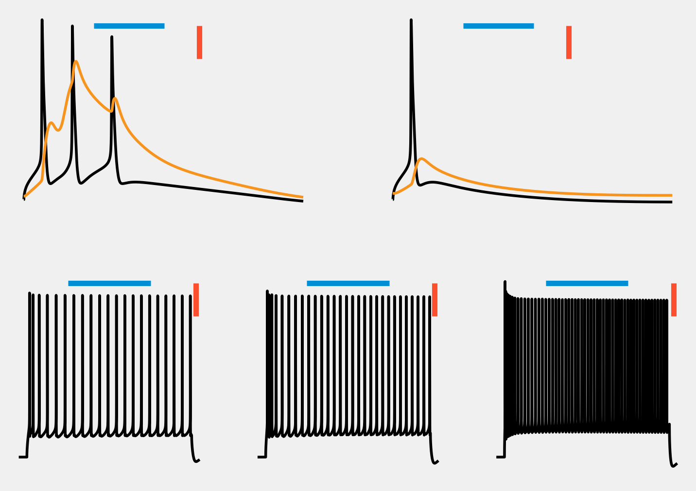

Simulating biophysically detailed multi-compartmental models using ISF¶
This notebook guides the user on how to use ISF to run in silico current injection experiments using biophysically detailed full-compartmental models using the Simulator and Evaluator objects. These objects can be configured once per cell, and re-used for various simulation protocols.
Tutorial 1.2 will show how to evaluate existing biophysically detailed compartmental models
Tutorial 1.3 will use the concepts outlined in this Tutorial and Tutorial 1.2 to generate biophysically detailed compartmental models that satisfy the empirical constraints outlined in Tutorial 1.2.
Adapt your desired output path below. Here, the results of the tutorials will be saved.
[1]:
from pathlib import Path
tutorial_output_dir = f"{Path.home()}/isf_tutorial_output" # <-- Change this to your desired output directory
[2]:
%matplotlib inline
import Interface as I
db = I.DataBase(tutorial_output_dir).create_sub_db("neuron_modeling")
[INFO] ISF: Current version: heads/data+0.g1077bcf8.dirty
[INFO] ISF: Current pid: 227340
Warning: no DISPLAY environment variable.
--No graphics will be displayed.
[INFO] ISF: Loading mechanisms:
[ATTENTION] ISF: The source folder has uncommited changes!
[INFO] ISF: Loaded modules with __version__ attribute are:
IPython: 8.12.2, Interface: heads/data+0.g1077bcf8.dirty, PIL: 10.4.0, _brotli: 1.0.9, _csv: 1.0, _ctypes: 1.1.0, _curses: b'2.2', _decimal: 1.70, argparse: 1.1, backcall: 0.2.0, blosc: 1.11.1, bluepyopt: 1.9.126, brotli: 1.0.9, certifi: 2024.08.30, cffi: 1.17.0, charset_normalizer: 3.4.0, click: 7.1.2, cloudpickle: 3.1.0, colorama: 0.4.6, comm: 0.2.2, csv: 1.0, ctypes: 1.1.0, cycler: 0.12.1, cytoolz: 0.12.3, dash: 2.18.2, dask: 2.30.0, dateutil: 2.9.0, deap: 1.4, debugpy: 1.8.5, decimal: 1.70, decorator: 5.1.1, defusedxml: 0.7.1, distributed: 2.30.0, distutils: 3.8.20, django: 1.8.19, entrypoints: 0.4, executing: 2.1.0, fasteners: 0.17.3, flask: 1.1.4, fsspec: 2024.10.0, future: 1.0.0, greenlet: 3.1.1, idna: 3.10, ipaddress: 1.0, ipykernel: 6.29.5, ipywidgets: 8.1.5, isf_pandas_msgpack: 0.2.3, itsdangerous: 1.1.0, jedi: 0.19.1, jinja2: 2.11.3, joblib: 1.4.2, json: 2.0.9, jupyter_client: 7.3.4, jupyter_core: 5.7.2, kiwisolver: 1.4.5, logging: 0.5.1.2, markupsafe: 2.0.1, matplotlib: 3.5.1, matplotlib_inline: 0.1.7, msgpack: 1.0.8, neuron: 7.8.2+, numcodecs: 0.12.1, numexpr: 2.8.6, numpy: 1.19.2, packaging: 25.0, pandas: 1.1.3, parameters: 0.2.1, parso: 0.8.4, past: 1.0.0, pexpect: 4.9.0, pickleshare: 0.7.5, platform: 1.0.8, platformdirs: 4.3.6, plotly: 5.24.1, prompt_toolkit: 3.0.48, psutil: 6.0.0, ptyprocess: 0.7.0, pure_eval: 0.2.3, pydevd: 2.9.5, pygments: 2.18.0, pyparsing: 3.1.4, pytz: 2024.2, re: 2.2.1, requests: 2.32.3, scandir: 1.10.0, scipy: 1.5.2, seaborn: 0.12.2, six: 1.16.0, sklearn: 0.23.2, socketserver: 0.4, socks: 1.7.1, sortedcontainers: 2.4.0, stack_data: 0.6.2, statsmodels: 0.13.2, sumatra: 0.7.4, tables: 3.8.0, tblib: 3.0.0, tlz: 0.12.3, toolz: 1.0.0, tqdm: 4.67.1, traitlets: 5.14.3, urllib3: 2.2.3, wcwidth: 0.2.13, werkzeug: 1.0.1, yaml: 5.3.1, zarr: 2.15.0, zlib: 1.0, zmq: 26.2.0, zstandard: 0.19.0
Equipping a morphology with biophysical parameters¶
This section will introduce a format for biophysical parameters, and how to apply them to a cell morphology using the single_cell_parser package. We will use the layer 5 Pyramidal Tract neuron as an example application.
Which format do these neuron parameters have?
[3]:
from getting_started import example_data_dir
import ast
import pprint
cell_param_file = I.os.path.join(
example_data_dir,
'biophysical_constraints',
'86_C2_center.param')
with open(cell_param_file, 'r') as f:
params = f.read()
pprint.pp(ast.literal_eval(params))
{'info': {'name': 'hay_2011_dend_test',
'author': 'regger',
'date': '15Oct2014'},
'NMODL_mechanisms': {'channels': '/'},
'mech_globals': {},
'neuron': {'filename': '/gpfs/soma_fs/scratch/meulemeester/project_src/in_silico_framework/getting_started/example_data/anatomical_constraints/86_C2_center.hoc',
'cell_modify_functions': {'scale_apical_morph_86': {}},
'Soma': {'properties': {'Ra': 100.0,
'cm': 1.0,
'ions': {'ek': -85.0, 'ena': 50.0}},
'mechanisms': {'global': {},
'range': {'pas': {'spatial': 'uniform',
'g': 3.26e-05,
'e': -90},
'Ca_LVAst': {'spatial': 'uniform',
'gCa_LVAstbar': 0.00462},
'Ca_HVA': {'spatial': 'uniform',
'gCa_HVAbar': 0.000642},
'SKv3_1': {'spatial': 'uniform',
'gSKv3_1bar': 0.983},
'SK_E2': {'spatial': 'uniform',
'gSK_E2bar': 0.0492},
'K_Tst': {'spatial': 'uniform',
'gK_Tstbar': 0.0471},
'K_Pst': {'spatial': 'uniform',
'gK_Pstbar': 0.0},
'Nap_Et2': {'spatial': 'uniform',
'gNap_Et2bar': 0.00499},
'NaTa_t': {'spatial': 'uniform',
'gNaTa_tbar': 2.43},
'CaDynamics_E2': {'spatial': 'uniform',
'decay': 770.0,
'gamma': 0.000616},
'Ih': {'spatial': 'uniform',
'gIhbar': 8e-05}}}},
'Dendrite': {'properties': {'Ra': 100.0, 'cm': 2.0},
'mechanisms': {'global': {},
'range': {'pas': {'spatial': 'uniform',
'g': 6.31e-05,
'e': -90.0},
'Ih': {'spatial': 'uniform',
'gIhbar': 0.0002}}}},
'ApicalDendrite': {'properties': {'Ra': 100.0,
'cm': 2.0,
'ions': {'ek': -85.0,
'ena': 50.0}},
'mechanisms': {'global': {},
'range': {'pas': {'spatial': 'uniform',
'g': 8.82e-05,
'e': -90},
'SK_E2': {'spatial': 'uniform',
'gSK_E2bar': 0.0034},
'Ca_LVAst': {'spatial': 'uniform_range',
'gCa_LVAstbar': 0.104,
'begin': 900.0,
'end': 1100.0,
'outsidescale': 0.01},
'Ca_HVA': {'spatial': 'uniform_range',
'gCa_HVAbar': 0.00452,
'begin': 900.0,
'end': 1100.0,
'outsidescale': 0.1},
'CaDynamics_E2': {'spatial': 'uniform',
'decay': 133.0,
'gamma': 0.0005},
'SKv3_1': {'spatial': 'uniform',
'gSKv3_1bar': 0.0112},
'NaTa_t': {'spatial': 'uniform',
'gNaTa_tbar': 0.0252},
'Im': {'spatial': 'uniform',
'gImbar': 0.000179},
'Ih': {'spatial': 'exponential',
'distance': 'relative',
'gIhbar': 0.0002,
'offset': -0.8696,
'linScale': 2.087,
'_lambda': 3.6161,
'xOffset': 0.0}}}},
'AIS': {'properties': {'Ra': 100.0,
'cm': 1.0,
'ions': {'ek': -85.0, 'ena': 50.0}},
'mechanisms': {'global': {},
'range': {'pas': {'spatial': 'uniform',
'g': 2.56e-05,
'e': -90},
'Ca_LVAst': {'spatial': 'uniform',
'gCa_LVAstbar': 0.00858},
'Ca_HVA': {'spatial': 'uniform',
'gCa_HVAbar': 0.000692},
'SKv3_1': {'spatial': 'uniform',
'gSKv3_1bar': 0.958},
'SK_E2': {'spatial': 'uniform',
'gSK_E2bar': 5.77e-05},
'K_Tst': {'spatial': 'uniform',
'gK_Tstbar': 0.0841},
'K_Pst': {'spatial': 'uniform',
'gK_Pstbar': 0.773},
'Nap_Et2': {'spatial': 'uniform',
'gNap_Et2bar': 0.00146},
'NaTa_t': {'spatial': 'uniform',
'gNaTa_tbar': 0.088},
'CaDynamics_E2': {'spatial': 'uniform',
'decay': 507.0,
'gamma': 0.0175},
'Ih': {'spatial': 'uniform',
'gIhbar': 8e-05}}}},
'Myelin': {'properties': {'Ra': 100.0, 'cm': 0.02},
'mechanisms': {'global': {},
'range': {'pas': {'spatial': 'uniform',
'g': 4e-05,
'e': -90.0}}}}},
'sim': {'Vinit': -75.0,
'tStart': 0.0,
'tStop': 250.0,
'dt': 0.025,
'T': 34.0,
'recordingSites': ['/gpfs/soma_fs/scratch/meulemeester/project_src/in_silico_framework/getting_started/example_data/apical_proximal_distal_rec_sites.landmarkAscii']}}
The variable cell_param is one big dictionary-like object, including information on:
the spatial distribution of ion channels
\(Ca^{2+}\) buffering dynamics
default simulation parameters (time interval and resolution)
recording site locations
passive properties (capacitance, input resistance, and reversal potentials)
a morphology file
cell modify functions
For our neuron, we need to pass a function to scale the apical dendrite of the L5PT. this is visible in the key cell_modify_functions. Why this is necessary is outlined here
Using these parameters, we can create a Cell object, containing all the information on morphology and simulation data.
[4]:
from single_cell_parser.cell_modify_functions.scale_apical_morph_86 import scale_apical_morph_86
import neuron
h = neuron.h
I.logger.setLevel("INFO") # verbose output to see what is happening
cell_param = I.scp.build_parameters(cell_param_file) # this is the main method to load in parameterfiles
cell = I.scp.create_cell(
cell_param.neuron,
) # this is the main method to create a cell
I.logger.setLevel("ATTENTION")
[INFO] single_cell_parser: -------------------------------
[INFO] single_cell_parser: Starting setup of cell model...
[INFO] single_cell_parser: Loading cell morphology...
[INFO] reader: Reading hoc file /gpfs/soma_fs/scratch/meulemeester/project_src/in_silico_framework/getting_started/example_data/anatomical_constraints/86_C2_center.hoc
[INFO] cell_parser: Creating AIS:
[INFO] cell_parser: axon hillock diameter: 3.00
[INFO] cell_parser: initial segment diameter: 1.75
[INFO] cell_parser: myelin diameter: 1.00
[INFO] single_cell_parser: Setting up biophysical model...
[INFO] cell_parser: Adding membrane properties to Soma
[INFO] cell_parser: Adding membrane properties to Dendrite
[INFO] cell_parser: Adding membrane properties to ApicalDendrite
[INFO] cell_parser: Adding membrane properties to AIS
[INFO] cell_parser: Adding membrane properties to Myelin
[INFO] cell_parser: Setting up spatial discretization...
[INFO] cell_parser: frequency used for determining discretization: 100.0
[INFO] cell_parser: maximum segment length: None
[INFO] cell_parser: Total number of compartments in model: 1109
[INFO] cell_parser: Total length of model cell: 15290.39
[INFO] cell_parser: Average compartment length: 13.79
[INFO] cell_parser: Maximum compartment (Dendrite) length: 31.54
[INFO] cell_parser: Adding membrane range mechanisms to Soma
[INFO] cell_parser: Inserting mechanism pas with spatial distribution uniform
[INFO] cell_parser: Inserting mechanism Ca_LVAst with spatial distribution uniform
[INFO] cell_parser: Inserting mechanism Ca_HVA with spatial distribution uniform
[INFO] cell_parser: Inserting mechanism SKv3_1 with spatial distribution uniform
[INFO] cell_parser: Inserting mechanism SK_E2 with spatial distribution uniform
[INFO] cell_parser: Inserting mechanism K_Tst with spatial distribution uniform
[INFO] cell_parser: Inserting mechanism K_Pst with spatial distribution uniform
[INFO] cell_parser: Inserting mechanism Nap_Et2 with spatial distribution uniform
[INFO] cell_parser: Inserting mechanism NaTa_t with spatial distribution uniform
[INFO] cell_parser: Inserting mechanism CaDynamics_E2 with spatial distribution uniform
[INFO] cell_parser: Inserting mechanism Ih with spatial distribution uniform
[INFO] cell_parser: Adding membrane range mechanisms to Dendrite
[INFO] cell_parser: Inserting mechanism pas with spatial distribution uniform
[INFO] cell_parser: Inserting mechanism Ih with spatial distribution uniform
[INFO] cell_parser: Adding membrane range mechanisms to ApicalDendrite
[INFO] cell_parser: Inserting mechanism pas with spatial distribution uniform
[INFO] cell_parser: Inserting mechanism SK_E2 with spatial distribution uniform
[INFO] cell_parser: Inserting mechanism Ca_LVAst with spatial distribution uniform_range
[INFO] cell_parser: Inserting mechanism Ca_HVA with spatial distribution uniform_range
[INFO] cell_parser: Inserting mechanism CaDynamics_E2 with spatial distribution uniform
[INFO] cell_parser: Inserting mechanism SKv3_1 with spatial distribution uniform
[INFO] cell_parser: Inserting mechanism NaTa_t with spatial distribution uniform
[INFO] cell_parser: Inserting mechanism Im with spatial distribution uniform
[INFO] cell_parser: Inserting mechanism Ih with spatial distribution exponential
[INFO] cell_parser: Adding membrane range mechanisms to AIS
[INFO] cell_parser: Inserting mechanism pas with spatial distribution uniform
[INFO] cell_parser: Inserting mechanism Ca_LVAst with spatial distribution uniform
[INFO] cell_parser: Inserting mechanism Ca_HVA with spatial distribution uniform
[INFO] cell_parser: Inserting mechanism SKv3_1 with spatial distribution uniform
[INFO] cell_parser: Inserting mechanism SK_E2 with spatial distribution uniform
[INFO] cell_parser: Inserting mechanism K_Tst with spatial distribution uniform
[INFO] cell_parser: Inserting mechanism K_Pst with spatial distribution uniform
[INFO] cell_parser: Inserting mechanism Nap_Et2 with spatial distribution uniform
[INFO] cell_parser: Inserting mechanism NaTa_t with spatial distribution uniform
[INFO] cell_parser: Inserting mechanism CaDynamics_E2 with spatial distribution uniform
[INFO] cell_parser: Inserting mechanism Ih with spatial distribution uniform
[INFO] cell_parser: Adding membrane range mechanisms to Myelin
[INFO] cell_parser: Inserting mechanism pas with spatial distribution uniform
[INFO] single_cell_parser: -------------------------------
[INFO] cell_parser: Applying cell_modify_function scale_apical_morph_86 with parameters {}
[INFO] scale_apical_morph_86: Scaled 33 apical sections...
We now have a biophysically detailed Cell object. Let’s start by figuring out some general morphological properties of our neuron.
[5]:
length = sum([
sec.L for sec in cell.sections])
dendrite_length = sum([
sec.L for sec in cell.sections if sec.label in ['Soma', 'Dendrite', 'ApicalDendrite']])
soma_area = sum([
sec.area for sec in cell.sections if sec.label == 'Soma'])
apic_area = sum([
sec.area for sec in cell.sections if sec.label == 'ApicalDendrite'])
print('total length = {:.0f} micron'.format(length))
print('total dendritic length = {:.0f} micron'.format(dendrite_length))
print('soma area = {:.0f} micron^2'.format(soma_area))
print('apical dendrite area = {:.0f} micron^2'.format(apic_area))
total length = 16340 micron
total dendritic length = 15290 micron
soma area = 916 micron^2
apical dendrite area = 16855 micron^2
What does this morphology look like?
[6]:
%matplotlib inline
from visualize.cell_morphology_visualizer import CellMorphologyVisualizer
fig = CellMorphologyVisualizer(cell).plot()

The ISF Simulator¶
This Cell object can be directly simulated using NEURON’s Python API, as outlined in this auxiliary tutorial. However, ISF provides convenient wrappers for simulating fixed stimuli that makes this process more convenient.
This Section will provide a walkthrough on how to interact with the biophysical properties of a Cell using the Simulator object, rather than directly interacting with the NEURON hoc interface. This object can be configured once per cell, and re-used for various simulation protocols. It operates on biophysical parameters of the pandas.dataFrame type.
We will load in an existing configuration to showcase the syntax. More information on how this Simulator object can be configures is given in Tutorial 1.3: Generation.
Biophysical parameters¶
Rather than using the cell parameters as described above directly, we will instead use vectors, here in the form of pandas Series. The Simulator handles the rest.
[8]:
# Load example biophysical models
from getting_started import example_data_dir
model_db = I.DataBase(I.os.path.join(example_data_dir, "simulation_data", "biophysics"))
example_models = model_db['example_models']
[9]:
# parameter names
biophysical_parameters = [e for e in example_models.columns if "ephys" in e or e == "scale_apical.scale"]
Let’s inspect what these biophysical parameters look like
[10]:
# get the biophysical parameters of one examplary biophysical model
p = example_models.iloc[0][biophysical_parameters]
p
[10]:
ephys.CaDynamics_E2_v2.apic.decay 30.1369
ephys.CaDynamics_E2_v2.apic.gamma 0.00471227
ephys.CaDynamics_E2_v2.axon.decay 281.484
ephys.CaDynamics_E2_v2.axon.gamma 0.00226783
ephys.CaDynamics_E2_v2.soma.decay 90.695
ephys.CaDynamics_E2_v2.soma.gamma 0.0229926
ephys.Ca_HVA.apic.gCa_HVAbar 5.66599e-06
ephys.Ca_HVA.axon.gCa_HVAbar 0.000664151
ephys.Ca_HVA.soma.gCa_HVAbar 0.000443414
ephys.Ca_LVAst.apic.gCa_LVAstbar 0.172148
ephys.Ca_LVAst.axon.gCa_LVAstbar 0.00138693
ephys.Ca_LVAst.soma.gCa_LVAstbar 0.00474682
ephys.Im.apic.gImbar 2.72481e-06
ephys.K_Pst.axon.gK_Pstbar 0.386035
ephys.K_Pst.soma.gK_Pstbar 0.173312
ephys.K_Tst.axon.gK_Tstbar 0.06864
ephys.K_Tst.soma.gK_Tstbar 0.0475422
ephys.NaTa_t.apic.gNaTa_tbar 0.0164207
ephys.NaTa_t.axon.gNaTa_tbar 2.3257
ephys.NaTa_t.soma.gNaTa_tbar 2.69863
ephys.Nap_Et2.axon.gNap_Et2bar 0.00747167
ephys.Nap_Et2.soma.gNap_Et2bar 0.00775383
ephys.SK_E2.apic.gSK_E2bar 2.00336e-06
ephys.SK_E2.axon.gSK_E2bar 0.0232935
ephys.SK_E2.soma.gSK_E2bar 0.000241686
ephys.SKv3_1.apic.gSKv3_1bar 0.000231903
ephys.SKv3_1.apic.offset 0.783382
ephys.SKv3_1.apic.slope -2.10522
ephys.SKv3_1.axon.gSKv3_1bar 1.82322
ephys.SKv3_1.soma.gSKv3_1bar 0.894344
ephys.none.apic.g_pas 4.26842e-05
ephys.none.axon.g_pas 4.61739e-05
ephys.none.dend.g_pas 4.03134e-05
ephys.none.soma.g_pas 4.02194e-05
scale_apical.scale 1.69117
Name: 0, dtype: object
We have 35 biophysical parameters, relating to varying biophysical aspects for the soma, axon (AIS), apical dendrite, and other dendrites (taken to be passive for current injection experiments).
Name |
Meaning |
Unit |
|---|---|---|
ephys.X.<location>.gXbar |
Density of Hodgkin Huxley-type channel X |
[\(S/cm^2\)] |
scale_apical.scale |
Scaling factor for the diameter of the apical dendrite |
None |
ephys.CaDynamics_E2_v2.<location>.gamma |
Ratio of free \(Ca^{2+}\) |
None |
ephys.CaDynamics_E2_v2.<location>.gamma |
Time constant of first-order dynamic \(Ca^{2+}\)-buffering |
[\(ms\)] |
ephys.SKv3_1.apic.offset/slope |
Distribution parameters of \(SK_V3.1\) channels |
[\(\mu m\)]/None |
The Simulator¶
Here, we introduce the Simulator object, specific to a particular morphology.
To set up a Simulator, you need morphology-specific fixed parameters. We will use a new morphology for this, with the ID “89”.
[11]:
def get_example_fixed_params(db, key):
p = db[key]['get_fixed_params'](db[key])
return p
[12]:
fixed_params = get_example_fixed_params(model_db, '89')
pprint.pp(fixed_params)
{'BAC.hay_measure.recSite': 294.8203371921156,
'BAC.stim.dist': 294.8203371921156,
'bAP.hay_measure.recSite1': 294.8203371921156,
'bAP.hay_measure.recSite2': 474.8203371921156,
'hot_zone.min_': 384.8203371921156,
'hot_zone.max_': 584.8203371921156,
'hot_zone.outsidescale_sections': [23,
24,
25,
26,
27,
28,
29,
31,
32,
33,
34,
35,
37,
38,
40,
42,
43,
44,
46,
48,
50,
51,
52,
54,
56,
58,
60],
'morphology.filename': '/gpfs/soma_fs/scratch/meulemeester/project_src/in_silico_framework/getting_started/example_data/simulation_data/biophysics/89/db/morphology/89_L5_CDK20050712_nr6L5B_dend_PC_neuron_transform_registered_C2.hoc'}
These parameters define recording locations for stimuli, and some celltype-specific variables. In our case of an L5PT, it also defines the “hotzone”: a small section of apical dendrite near the bifurcation zone that has a high density of \(Ca^{2+}\) channels. Each L5PT morphology also has a free parameter to scale the diameter of the apical dendrite. This is added to the fixed_params as an additional modification method. Usually, big parts of such setup can be re-used for different
morphologies, simulations etc. The setup below will highlight which parts are specific to the celltype, the cell, or the biophysical details of a single cell.
The full setup of a Simulator object for running Hay’s protocols on an L5PT is given in biophysics_fitting.hay.default_setup.get_Simulator().
[13]:
from biophysics_fitting.hay.default_setup import get_Simulator
from biophysics_fitting.L5tt_parameter_setup import get_L5tt_template_v2
def scale_apical(cell_param, params):
assert(len(params) == 1)
cell_param.cell_modify_functions.scale_apical.scale = params['scale']
return cell_param
s = get_Simulator(fixed_params)
s.setup.cell_param_generator = get_L5tt_template_v2
s.setup.cell_param_modify_funs.append(('scale_apical', scale_apical))
After this setup, we now have a Simulator object with morphology-specific fixed_params. This was most of the work. Actually simulating is easy now.
For a Simulator object s, the main functions are:
Method |
Output |
|---|---|
|
a dictionary with the specified voltagetraces for all stimuli |
|
params and cell object for stimulus stim |
|
a cell with set up biophysics |
|
cell |
|
complete neuron parameter filethat can be used for further simulations, i.e. with the |
The \(bAP\) stimulus¶
The \(bAP\) stimulus protocol is a step current injection at the soma, strong enough to evoke a backpropagating action potential (bAP)
[14]:
cell, param = s.get_simulated_cell(p, 'bAP')
[15]:
I.plt.style.use("fivethirtyeight")
I.plt.plot(cell.tVec, cell.sections[0].recVList[0])
[15]:
[<matplotlib.lines.Line2D at 0x2ab6c65df160>]

The \(BAC\) stimulus protocol¶
A \(BAC\) stimulus is a \(bAP\) stimulus, with a well-timed epsp-shaped current injection at the apical dendrite. \(BAC\) here stands for \(bAP\)-activated \(Ca^{2+}\)-spike
Where exactly do we inject the epsp-shaped apical current? We already saved this information in fixed_params. Morphology “89” has a rather deep bifurcation, so the epsp injection is at only \(295\mu m\) from the soma.
[16]:
fixed_params['BAC.stim.dist']
[16]:
294.8203371921156
[ ]:
I.logger.setLevel("ATTENTION")
cell, p = s.get_simulated_cell(p, 'BAC')
[18]:
I.plt.plot(cell.tVec, cell.sections[0].recVList[0])
[18]:
[<matplotlib.lines.Line2D at 0x2ab6c6575790>]

Running all stimulus protocols¶
In the previous sections, we ran an example \(bAP\) stimulus, and a \(BAC\) stimulus. This resulted in a single AP, and a triplet respectively. In order to verify if the biophysical properties of the cell match empirically observed responses, we also need to run \(3\) step currents and measure the response.
For this, we have a Simulator that has these step currents set up:
[19]:
s = get_Simulator(fixed_params, step=True)
s.setup.cell_param_generator = get_L5tt_template_v2
s.setup.cell_param_modify_funs.append(('scale_apical', scale_apical))
[20]:
# may take a while, especially the step currents
voltage_traces = s.run(params=p)
These results will be convenient for the next tutorial. Let’s save them.
[21]:
db['simulator'] = s
db['voltage_traces'] = voltage_traces
[WARNING] isf_data_base: The database source folder has uncommitted changes!
[WARNING] isf_data_base: The database source folder has uncommitted changes!
voltage_traces is a dictionary with the voltage trace (i.e. NEURON’s tVec and vList) of the cell for each stimulus protocol.
[22]:
voltage_traces.keys()
[22]:
dict_keys(['bAP.hay_measure', 'BAC.hay_measure', 'StepOne.hay_measure', 'StepTwo.hay_measure', 'StepThree.hay_measure'])
[23]:
# visualize all responses
from visualize import voltage_trace_visualizer as vtv
vtv.visualize_vt(voltage_traces, lw=2)

Recap¶
This tutorial showed how to run simulations using ISF’s Simulator.
The voltage traces of these simulations look good, but looking is not a great quantifier. Let’s see how far off these responses are compared to the empirically recored ones in the next tutorial: 1.2 Evaluation.